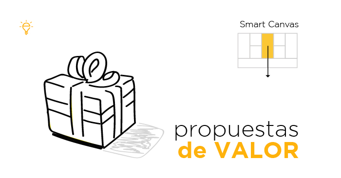

Propuesta de valor

Gestión integral de ventas y clientes
Ofrecer una solución que no solo se adecue a la gestión de pedidos, sino también en el seguimiento de ventas, clientes y productos en tiempo real, generando una actualizacion periódica para una optima preventa de los productos ofrecidos por los usuarios, disponibilidad de funciones como los filtros adecuándose a las necesidades de los usuarios.
Acceso inclusivo y equitativo
La aplicación está diseñada para ser accesible tanto en áreas urbanas como rurales, brindando oportunidades iguales de participación en el proceso de preventa.
Automatización del proceso de preventa
Proporcionar una aplicación que reemplace todos los procesos manuales llevados a cabo en papel, lo que permitirá una gestión más rápida y precisa de las preventas.